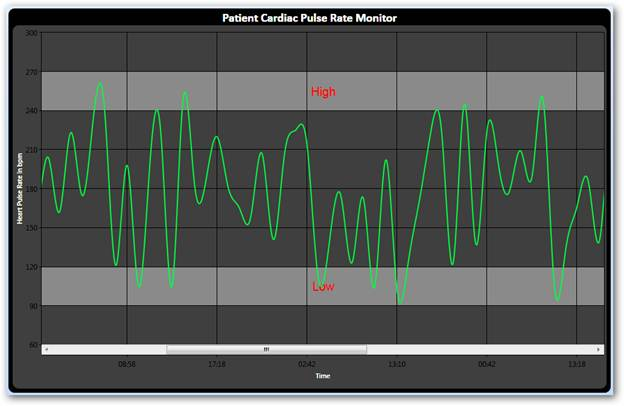

Automatic scrolling ensures that the specified data will always remain visible in the chart window. If autoscrolling is enabled on an axis, then a scroll bar appears along the particular axis and the scroll bar displays a particular set of data for which the “AutoScrollingDelta” value is specified.
Use Case Scenario
While adding huge amount of data to the chart in real time, the autoscrolling functionality helps us to view a particular set of data in the chart at a given time. This makes the scroll bar to display the recently added data and the set of newly added data to be viewed clearly, according to the AutoScrollingDelta specified for the axis in the chart.

Figure 255: Displays data for the specified value=50
Property
|
Property |
Description |
Type of the property |
Value it accepts |
Reference links |
|
EnableAutoScrolling |
It enables auto scrolling |
bool |
True/False |
NA |
|
AutoScrollingDelta |
Data is displayed based on the value specified |
double |
NA |
NA |
Adding Scroll Bar to a Chart
To enable AutoScrolling
|
[XAML] <syncfusion:ChartArea.PrimaryAxis> <!--Y axis declaration with required property settings--> <syncfusion:ChartAxis x:Name="XAxis" EnableAutoScrolling="True" AutoScrollingDelta="50" > </syncfusion:ChartAxis> </syncfusion:ChartArea.PrimaryAxis>
|
|
[C#] this.XAxis.EnableAutoScrolling = true; this.XAxis.AutoScrollingDelta = 50;
|
|
[VB] Me.XAxis.EnableAutoScrolling = True Me.XAxis.AutoScrollingDelta = 50
|